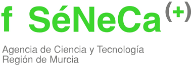

Sponsors
Supported by grants PID2021-122126NB-C31,
C32, C33 funded by MICIU/AEI/10.13039/501100011033 and by FEDER, UE as well as by
Fundación
Séneca - Agencia de Ciencia y Tecnología de la Región de Murcia (21955/PI/22)


The talks will take place in the auditorium of the Faculty of Mathematics
El encuentro tendrá lugar en la Facultad de Matemáticas de la Universidad de Murcia.
C. Campus Universitario, 9, 30100 Murcia
The talks will take place in the auditorium of the Faculty of Mathematics
C/ Av. Juan Carlos I, 55,
30100 - Murcia (Murcia)
Teléfono: 968 85 88 44
Website: www.sercotelhoteles.com/es/hotel-jc1
LOCALIZADOR: 45870
HABITACION DOBLE USO INDIVIDUAL ALOJAMIENTO Y DESAYUNO: 69€ / noche
HABITACION DOBLE ALOJAMIENTO Y DESAYUNO: 75€ / noche
PRECIOS IVA INCLUIDO
TARIFAS NETAS